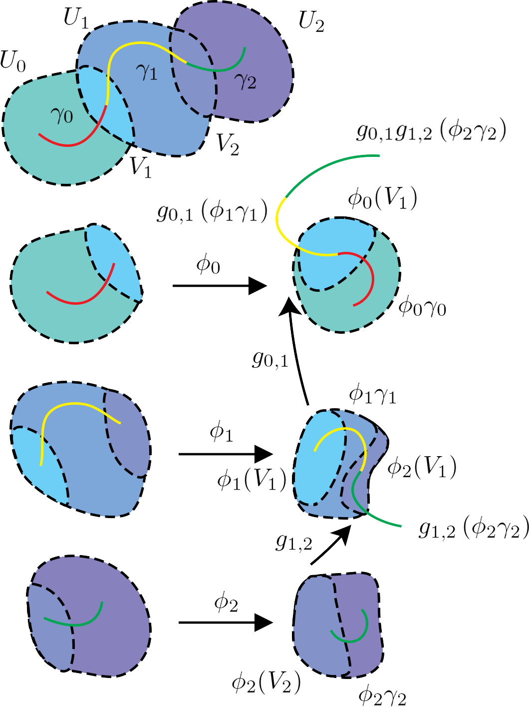
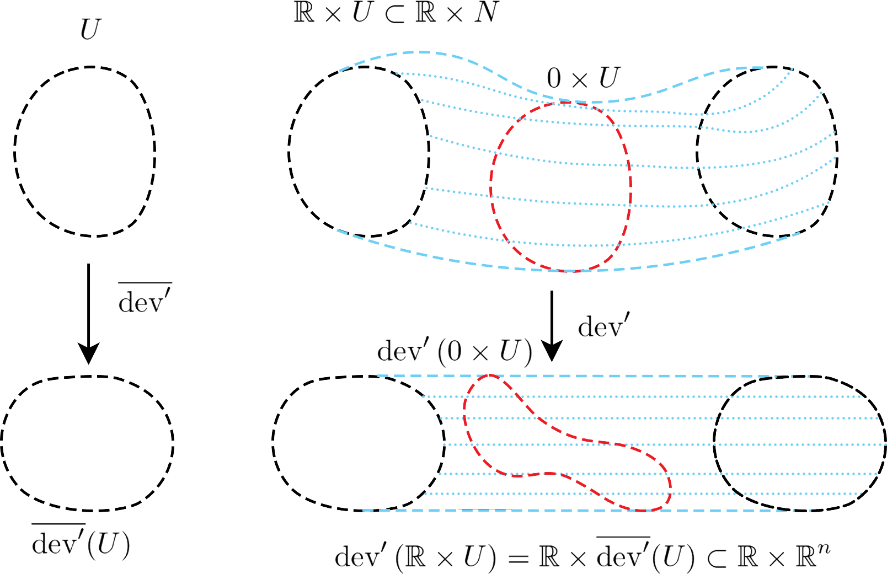

Research and Notes

My area of research is in geometric structures on manifolds, and specifically deformation and rigidity results. I like to think of deforming representations arising from hyperbolic, affine, and projective structures on manifolds in dimension two or three, or showing you can't do this in an interesting way. Recently my work has been focusing on deforming the hyperbolic structure of once-punctured torus bundles in the hyperbolic and projective setting. My work rephrases this deformation theory in terms of cohomology groups and dynamics. Using computer-assisted methods, I've been able to show that a bunch of Dehn fillings of the figure-eight knot complement can't be deformed to interesting inequivalent projective structures. I've also been thinking about representations of finite groups and their minimal complex and real faithful dimensions.
If I were talking to someone who doesn't think about this stuff constantly, I would maybe say that I like to think about different types of geometries than the ones we experience in day-to-day life. Locally, everything looks pretty flat, so a piece of paper is a good geometric model, but globally, a sphere works much better. There are other types of geometries you can put on surfaces that aren't spheres or planes.
Two main questions in my field of work are: given a space, what types of geometries can you put on it, and in how many inequivalent ways can you do this? Amazingly, there is a strong correspondence between geometry and representing algebraic invariants of your space in terms of matrices. Using a computer, I like to study the correspondence between the matrices and the local geometry in question. I'm exceptionally good at having incorrect ideas, so having a computer tell me whether I'm right or wrong is really helpful.

Papers
- Symplectic Tiling Billiards on Complete Affine Tori with Fabian Lander (2026). [Additional Programs]
- Asymptotics of the Meandering Number of a Cyclic Permutation with Diaaeldin Taha (2026)
- Minimal Faithful Representations of Split Extensions by Abelian Groups with Justin Kingsnorth (2025). [Additional Programs]
- Projective Rigidity of Once-Punctured Torus Bundles via the Twisted Alexander Polynomial . Geometriae Dedicata, Volume 219, Article 89 (2025). [Additional Programs]
- Computer Assisted Projective Rigidity To appear in the Journal of Experimental Mathematics (2026). [Additional Programs]
- Closed Affine Manifolds with an Invariant Line in revision for resubmission (2021)
- Algebraic $k$-systems of Curves , with Jonah Gaster , Maxie Lahn , Aisha Mechery , and Simran Nayak . Geometriae Dedicata 209, 125–134 (2020).